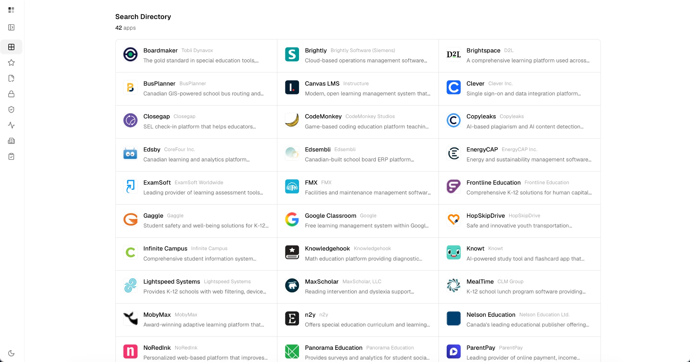
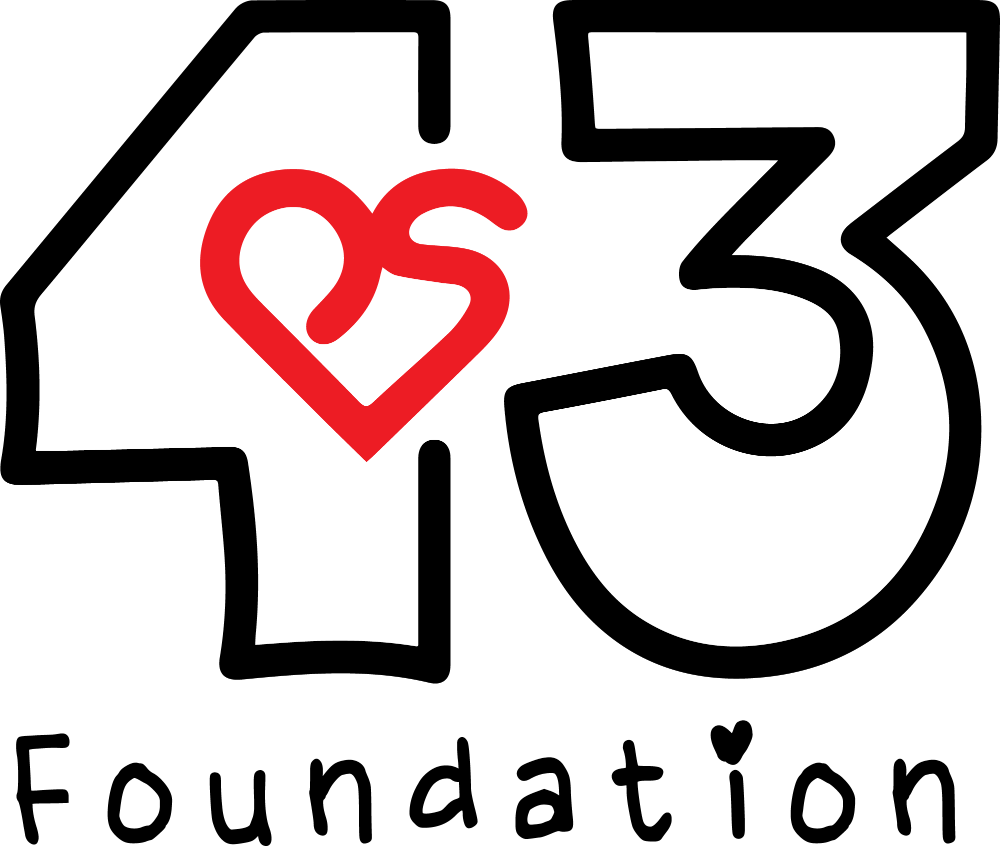
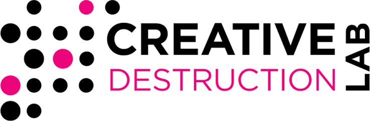
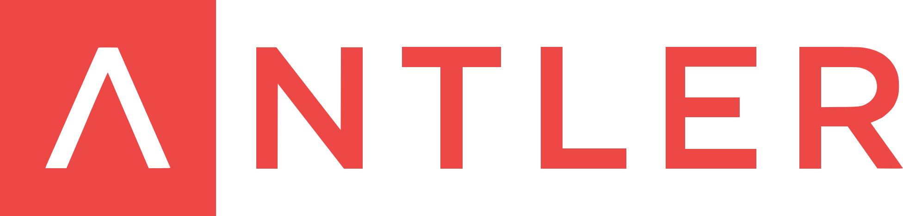
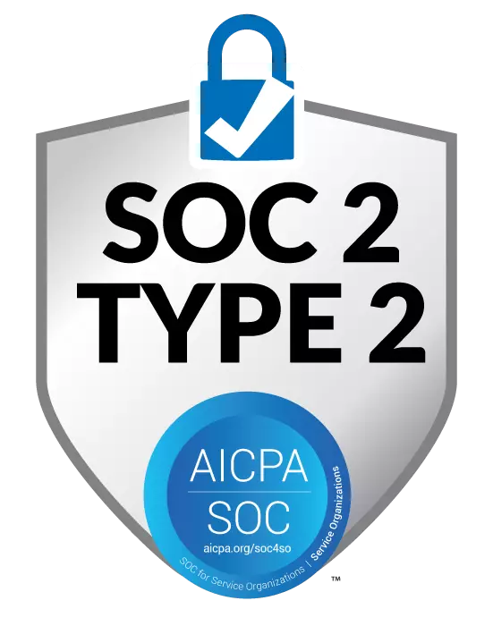

For ICT leaders
Know when a vendor's risk changes
Monitor tools beyond the initial third-party risk review, stay informed about shifts in features, terms, and data practices, and work with vendors to address new risks as they emerge.
Made in Canada
shuriii helps school boards and provincial shared service organizations see, in real time, whether every platform in use is safe and actually improving outcomes. Through one shared hub, shuriii gives ICT, business, and instructional leaders the evidence they need to make confident purchasing decisions, cut duplicated effort, and partner with vendors to improve the safety and effectiveness of every tool.

Trusted and supported by education and community organizations



How shuriii works
One shared view of every tool’s risk and impact, so boards, vendors, and provincial shared service organizations can make each one safer and more effective together.
Consolidate every EdTech vendor in one place with independent, ongoing review.
shuriii keeps each review current as tools change and new risks emerge, so you know where each tool stands on privacy and security and stay aligned with federal, provincial, and local privacy laws and board policies throughout the school year.
Monitor every vendor's risk continuously and resolve issues before they escalate.
Identified issues are prioritized and tracked through to resolution, creating a clear, documented record that helps your board demonstrate how it protects student, staff, and family data and meets its legal obligations. Monitoring becomes continuous, not a point-in-time check.
Measure the impact of each tool and work with vendors to improve it.
shuriii provides evidence of the value each tool brings to students, staff, families, and board leaders. Your board can see what's working and where more support or a different approach is needed, and make informed decisions about how public funds are invested.
One shared evidence base for ICT, business, and instructional leaders. In partnership with ECNO.
For ICT leaders
Monitor tools beyond the initial third-party risk review, stay informed about shifts in features, terms, and data practices, and work with vendors to address new risks as they emerge.
For business leaders
Connect spending with current evidence across business, operational, and instructional tools, identify underused or overlapping tools, and work with vendors to get more value from your investments.
For instructional leaders
See how tools affect teaching, learning, well-being, and access, identify where more support or a different approach is needed, and work with vendors to improve them.
For provincial shared service organizations
Understand which tools are in use across the province, where risks and gaps exist, and where effort is duplicated, so boards and vendors can work together to make each tool safer and more effective.
Trust and safety
shuriii is built from the ground up to protect data and uphold the privacy regulations that matter to public school boards, ministries of education, provincial shared services organizations, and education partners.
Privacy Policy
Most boards today rely on point-in-time compliance reviews and vendor self-reports. DistrictOS moves boards from point-in-time checks to continuous third-party risk management (TPRM) and impact measurement across the full life of every vendor relationship. Boards stay on top of their legal obligations year-round and know at any time which tools are safe and working.
DistrictOS builds on the process your board already has and manages ongoing oversight on your behalf, with no added work for your team. DistrictOS provides the evidence; your board makes the final decisions.
DistrictOS applies the same rigorous review to every tool, aligned to each board's federal, provincial, and local requirements, including privacy law, data residency, board policies, and reporting obligations. Each board can meet the rules of its own jurisdiction.
Just your current EdTech tool inventory. shuriii's DistrictOS handles the rest, giving your board a complete, verified view of every vendor 24/7.
See how DistrictOS can support your public school board, ministry of education, and shared-service organization. Request a demo for your ICT, business, and instructional leadership teams.